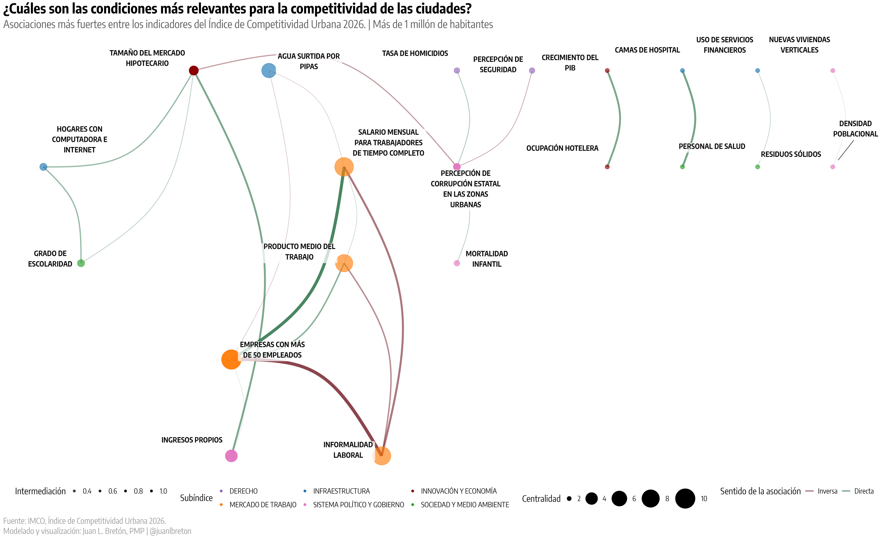
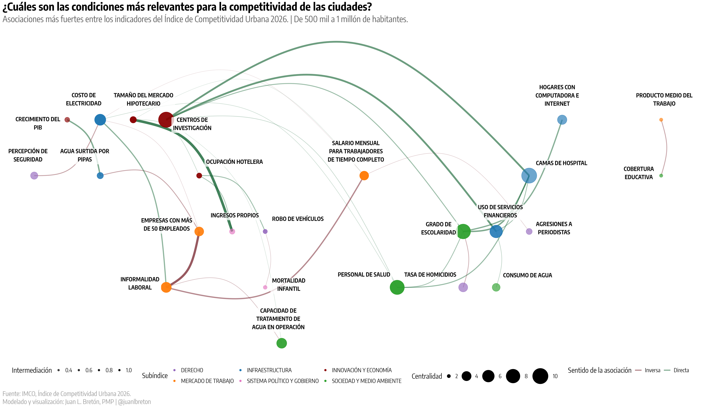
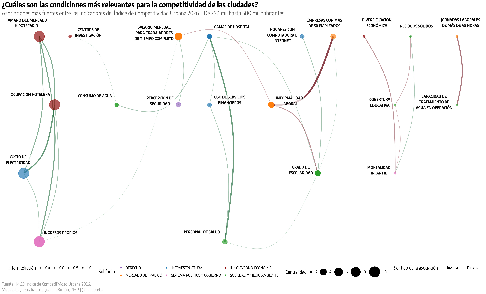
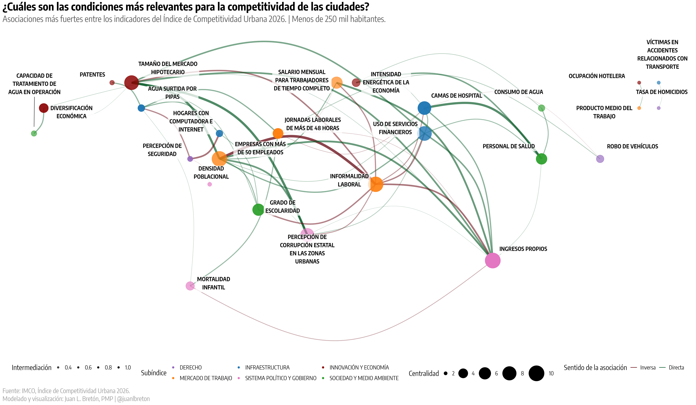

Qué debe atraer la atención de las ciudades para mejorar su competitividad
Lectura del Índice de Competitividad Urbana 2026 (ICU 2026) a partir de datos publicados por el Instituto Mexicano para la Ccompetitividad (IMCO). El foco está en los cuatro niveles de tamaño de ciudad incluidos en el índice.
Resumen Ejecutivo
Prioridades por nivel de ciudad
| Nivel de ciudad | Variables que más deberían atraer atención | Lectura ejecutiva |
|---|---|---|
| Más de 1 millón | Percepción de seguridad, hogares con computadora e internet, percepción de corrupción, tamaño del mercado hipotecario, ingresos propios, informalidad y empresas de más de 50 empleados. | La agenda debe combinar seguridad y Estado de derecho con conectividad, capacidad fiscal y empleo formal. La red laboral es el sistema central, pero los diferenciales de ranking están muy ligados a seguridad y confianza. |
| De 500 mil a 1 millón | Centros de investigación, camas de hospital, grado de escolaridad, informalidad laboral, capacidad de tratamiento de agua, tamaño del mercado hipotecario y percepción de seguridad. | La competitividad se apalanca en capacidades de conocimiento y servicios urbanos básicos. Salud, educación, investigación, agua y formalidad son el paquete prioritario. |
| De 250 mil a 500 mil | Informalidad laboral, empresas con más de 50 empleados, salario mensual, grado de escolaridad, mercado hipotecario, percepción de seguridad, corrupción y tratamiento de agua. | El salto competitivo pasa por escalar el aparato productivo formal. La prioridad es convertir actividad económica dispersa en empresas más grandes, mejores salarios, menos jornadas excesivas y mejor capital humano. |
| Menos de 250 mil | Ingresos propios, empresas con más de 50 empleados, informalidad laboral, tamaño del mercado hipotecario, uso de servicios financieros, camas de hospital, salarios y dependencia de pipas. | La competitividad depende más de capacidades base: finanzas municipales, empresas ancla, formalización, inclusión financiera, salud y servicios hídricos. El reto es construir masa crítica institucional y económica. |
Más de 1 millón: seguridad, conectividad y empleo formal son la agenda de alta escala
Qué dice el grafo. La red muestra un bloque laboral muy central: empresas con más de 50 empleados, salario mensual, informalidad laboral y producto medio del trabajo. También aparecen como conectores tamaño del mercado hipotecario, ingresos propios y hogares con computadora e internet.
Qué cambia el ranking. Las asociaciones más fuertes con mejor posición son percepción de seguridad (rho = -0.75), hogares con computadora e internet (-0.71), tamaño del mercado hipotecario (-0.58), grado de escolaridad (-0.57), centros de investigación (-0.56) e ingresos propios (-0.54). En sentido contrario, percepción de corrupción (0.70), agresiones a periodistas (0.59), robo de vehículos (0.55) y homicidios (0.53) se asocian con peor posición.
Implicación. En metrópolis grandes, las ciudades deberían concentrar su atención en tres frentes coordinados: seguridad cotidiana y confianza institucional; infraestructura digital y educativa; y formalización productiva. La política económica sin seguridad y Estado de derecho tiene menos probabilidad de mover la competitividad.

De 500 mil a 1 millón: capacidades de conocimiento, salud e infraestructura básica
Qué dice el grafo. Los nodos más centrales están en innovación, salud, educación e infraestructura: centros de investigación, camas de hospital, grado de escolaridad, personal de salud, uso de servicios financieros, costo de electricidad, informalidad y tratamiento de agua. La red sugiere que estas ciudades compiten por calidad de servicios y capacidad de especialización.
Qué cambia el ranking. Centros de investigación (rho = -0.68), camas de hospital (-0.68), tamaño del mercado hipotecario (-0.67), percepción de seguridad (-0.65), grado de escolaridad (-0.60) y capacidad de tratamiento de agua (-0.55) se asocian con mejores posiciones. Informalidad (0.58), homicidios (0.63) y jornadas de más de 48 horas (0.61) se asocian con peores posiciones.
Implicación. El foco debe estar en construir una ciudad intermedia con servicios sofisticados: investigación, salud, educación, seguridad y agua. La competitividad mejora cuando la ciudad ofrece capacidades urbanas que atraen empleo de mayor productividad y reducen dependencia de actividad informal.

De 250 mil a 500 mil: formalizar y escalar el aparato productivo
Qué dice el grafo. La red combina mercado hipotecario, ocupación hotelera, costo de electricidad e ingresos propios con un bloque laboral donde destacan informalidad, empresas con más de 50 empleados, salario y escolaridad. Esto apunta a ciudades cuya competitividad depende de pasar de actividad económica atomizada a empresas formales con mayor escala.
Qué cambia el ranking. Informalidad laboral tiene la asociación más fuerte con peor posición (rho = 0.85). En contraste, empresas con más de 50 empleados (-0.78), salario mensual (-0.60), grado de escolaridad (-0.51), mercado hipotecario (-0.47), percepción de seguridad (-0.61), intensidad energética de la economía (-0.54) y tratamiento de agua (-0.45) se asocian con mejor posición.
Implicación. La prioridad debe ser una estrategia de productividad local: simplificación regulatoria, encadenamientos productivos, atracción de empresas medianas y grandes, formación técnica, seguridad y servicios urbanos confiables. Reducir informalidad y jornadas largas no es sólo una agenda laboral; es una agenda de competitividad.

Menos de 250 mil: capacidad fiscal, empresas ancla y servicios básicos
Qué dice el grafo. En ciudades pequeñas, la red es más densa y gira alrededor de ingresos propios, empresas con más de 50 empleados, informalidad, mercado hipotecario, servicios financieros, camas de hospital y grado de escolaridad. La lectura principal es que la competitividad requiere construir masa crítica institucional y económica.
Qué cambia el ranking. Ingresos propios tiene la relación más fuerte con mejor posición (rho = -0.89). También destacan salario mensual (-0.81), empresas con más de 50 empleados (-0.79), tamaño del mercado hipotecario (-0.69), uso de servicios financieros (-0.67), camas de hospital (-0.60) y tratamiento de agua (-0.62). Informalidad (0.77), jornadas extensas (0.76) y agua surtida por pipas (0.61) se asocian con peor posición.
Implicación. La agenda debe empezar por capacidad de gestión: recaudación propia, profesionalización municipal, servicios de agua y salud, inclusión financiera y atracción o consolidación de empresas ancla. Para estas ciudades, mejorar competitividad significa ampliar la base fiscal y productiva antes de competir por apuestas más sofisticadas.

Qué deberían hacer las ciudades con esta lectura
1. Convertir variables centrales en tableros de gestión
Los indicadores con alta centralidad deberían monitorearse como condiciones habilitantes. Si se mueven, probablemente arrastran o anticipan cambios en otros frentes.
- Grandes: formalidad, escala empresarial, salarios, conectividad y seguridad.
- Intermedias: investigación, salud, educación, agua y formalidad.
- Pequeñas: ingresos propios, empresas ancla, servicios financieros, salud y agua.
2. Diseñar paquetes, no programas aislados
Las redes muestran complementariedades. Por ejemplo, formalización laboral se debe trabajar junto con escala empresarial, salarios, educación y seguridad; agua y salud funcionan como infraestructura de productividad, no sólo como servicios sociales.
Caveats y siguientes preguntas
- Las correlaciones y grafos son exploratorios. Sirven para priorizar atención, no para probar causalidad.
- El grupo de menos de 250 mil habitantes tiene sólo 11 ciudades; sus relaciones pueden ser más sensibles a casos particulares.
- Los indicadores usan escalas distintas. Por eso el análisis usa normalización en PCA, correlaciones por rango y brechas estandarizadas.
Cómo leer la evidencia
Se usaron tres señales complementarias. Primero, los grafos de red identifican variables centrales: nodos grandes y conectados sugieren condiciones que se mueven con muchas otras. Segundo, las correlaciones de Spearman contra la posición en el ranking del ICU indican asociación con el índice; como una posición menor es mejor, una correlación negativa significa que valores más altos se asocian con mejor competitividad, y una positiva significa que valores más altos se asocian con peor competitividad. Tercero, las brechas comparan ciudades de competitividad alta/media alta contra media baja/baja.
Esto no debe leerse como causalidad automática. Es una priorización exploratoria para enfocar diagnóstico, inversión pública, coordinación metropolitana y seguimiento de indicadores.
Fuentes
Fuentes: Instituto Mexicano para la Competitividad; Índice de Competitividad Urbana 2026. Modelado y visualizacion: Juan L. Bretón, PMP